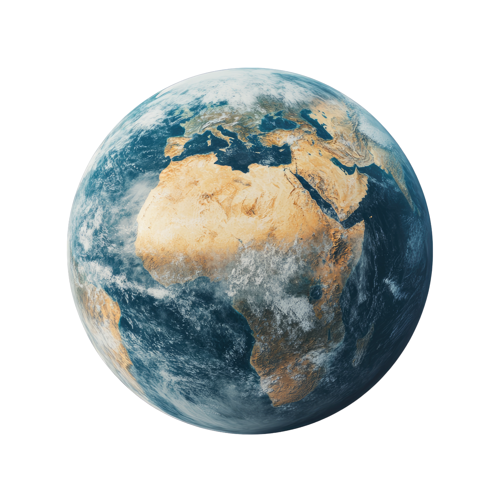
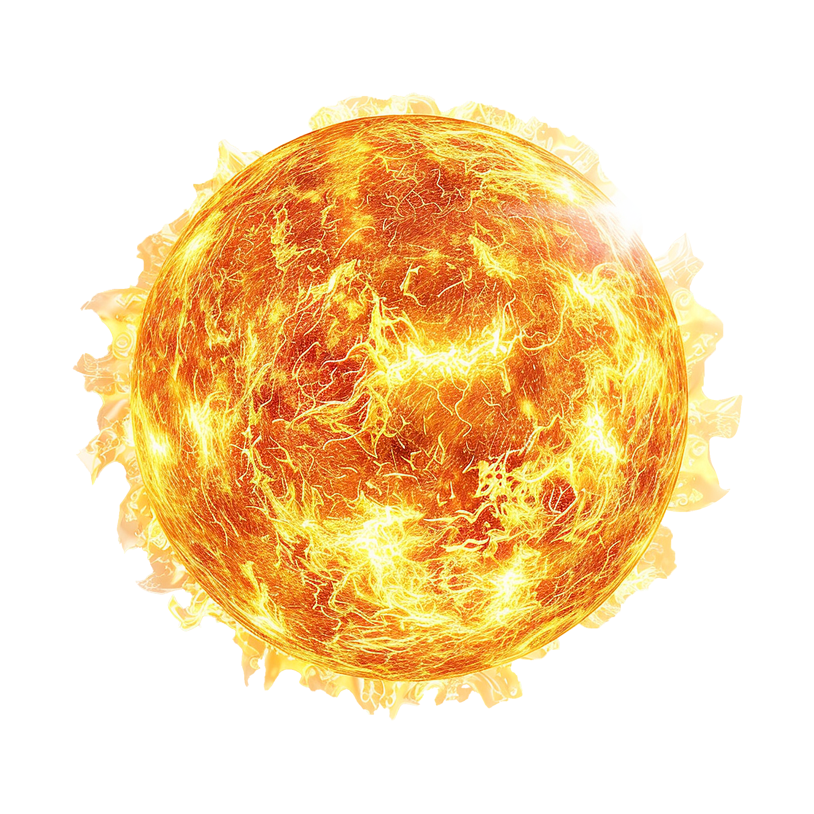

১৫ রবিউস সানি ১৪৪৬
১৯ অক্টোবর ২০২৪
৩ কার্তিক ১৪৩১
পরবর্তী নামাজ: আসর
আসর হতে বাকি:
০২:৫৪:৪৩


ফজর: ১২:০৬
আসর: ০৮:৪৩
মাগরিব: ০৬:৪২
ইশা: ০৮:৪২
Dhaka
•
Lat: 23.8103° N., Lon: 90.4 E
Alt: 7m
সূর্যোদয়: ০৫:২৭
সূর্যাস্ত: ০৬:৪২
২৮°C মেঘলা